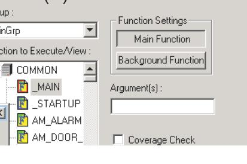
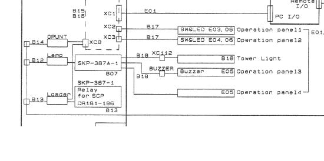

Service History
Subject: NS-6040 cannot Auto start SPEL background function
Handler Model: NS-6040
Controller: SRC520
Date: 21~31 May 2010
Symptom
NS6000-3 handler encountered the following problems:
1) It cannot restart properly after every shut-down. The MMI main screen doesn’t show-up completely after we press “Start” on the Taskbar.
2) We need to go to Spel-95 from the desktop to manually trigger it.
3)Tower lamp indicates red when in running production mode and it doesn’t alarm when errors occurred.
Action
can you kindly tell us more:
1) You face this problem all the time ever since this handler has been transferred?
- No
If NO:
2) When did you start seeing this problem? After some illegal shutdown or hang up and restart? etc. - YES
If YES:
3) Kindly explain what you mean by main screen does not show up completely? Operation panel no response? etc...
- Only a blank screen will show up and hangs there, even after we press the START button (please see Pic 1)
4) Other handlers, upon HDD boot up, it automatically loads the MMI and you just need to press START button or every handler requires you to click start manually on the taskbar?
- YES, other handlers will load the MMI after we press the START button, except for this one (NS6000-3).
Unable to load mainscreen
1) You mean nothing shows? Can you send us print screen?
(Please see Pic 1)
2) You mean you double click on SPEL 95 icon? It means MMI was launched but SPEL 95 not launched?
- The only way we can start this NS6000-3 handler is:
a.) After reboot, it will go to the blank main screen (pic 1) and stays there. All the taskbars can be seen and activated (Toolpad, Maintepad, etc), pressing the abort at the NS icon will say that the spel95 is running.
b.) Then, we need to end the sequence - (pic 3, 3b).
c.) Then, abort the Tastbar (pic 4).
d.) Then, go to the desktop and activate from the the SPEL95 (pic 5 & 6).
e.) Then, go to desktop again and launch NS taskbar so that the main screen (HALT) shows up. Note that the counters will still not show up at this point, even after we ON the main power button (pic 8)
f.) Then, we will login as supervisor, enable System Taskbar and Spel95 from the HALT screen (pic 9).
g.) Then, after the spel95 was launched, we will put it to manual “P” mode (pic 10) and press run. Only then will the complete screen will show up.
h.) We will NOT put it to auto mode as it will hang the handler. We will then disable the Taskbar & Spel95 and (pic 9).
3) Before that, did you check if you were able to double click on the main screen(HALT) and enter into SPEL? If 2) was carried, I assume you are not able to go into SPEL from here.
- YES, I believe the Spel95 was launch but not completely.
I need you to confirm if SPEL 95 was not launched or it was launched but the programs were not launched? Or was it just MMI not launched?
- Based on the sequence above please advice which has a problem? SPEL95 or MMI?
For MMI installation, I may be able to guide you over the phone if you have the CD. We do not have your current version as I believe it's customised and very old software. Before you try reinstall, maybe you try to answer my questions first to give me a better understanding of the situation.
Tower lamp wrong indication and no alarm
1) Did you try to put this tower lamp onto another handler? YES, I tried other lamps and it displays the same thing.
2) Try to separate between tower lamp itself or handler? Done but same result
3) Check the patolight settings in MMI or you can use SPEL 95 I/O to trigger lights/alarm. The only abnormality is when I “ON” the red light in the IO it will turn OFF and vice versa.
Perhaps you want to clear the loading first before looking at the tower lamp problem.
It seems, SPEL did not launch fully when you click start possibly due to background function was not selected.
I refer to your Pic10. Can you compare this with another good handler?
Especially:
1) Main function, you can see a red box around F.
2) Startup function, you do not have a blue box around F.
Please compare this with your good handler. You should see a blue box around F of startup function like my attached sample.JPG.

You can click on startup function and click on Background Function tab.
I know yours is Japanese language, but the SPEL remains the same. Just the FONTS is japanese. So you click on startup function and click background function tab.
Bottomline is you should see a blue box around F of startup function..
Unless your good handler also same, no blue box around F function?
After that, you can reboot and see if you still face same problem. If still cannot, you may have to reinstall....but before you reinstall, do a back up first..
Hidaka-san from ESP maybe able to help you find the correct version of MMI in japanese language.
For your tower light problem, you may want to trace using the wiring diagram and trobleshoot on the intermediate components like OUTPUT I/O module, cable or SKP board etc..
As long as you click from SPEL I/O for the light as well as buzzer and it shows abnormal status as compared to another good handler, it could be some board or I/O module or cable etc..You need to trace the path from PC to Tower light itself based on wiring diagram...Please see attached tower light.JPG. You need the full wiring diagram. My attached is just the main diagram.

btw, this handler is still production capable right? just that you're trying to solve this abnormal loading right?
31 May 2010
It’s already fixed and you’re correct, the SPEL95 Start-up background function was not activated.
The tower light also was already in the proper setting. Thank you
But I may still need to get the back-up 1.4a version. I’ll check first with our Japan side whether they have a back-up to give us.
Otherwise, I’ll inform Hidaka san for a new copy if needed. Thanks again.
Cause
SPEL95 Start-up background function was not activated.
Remarks
_MAIN => Main Function
_STARTUP => Background Function